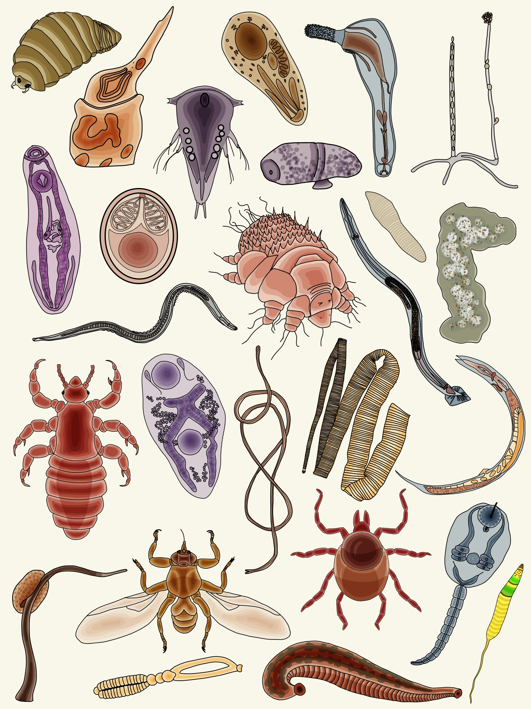
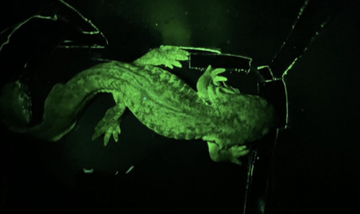
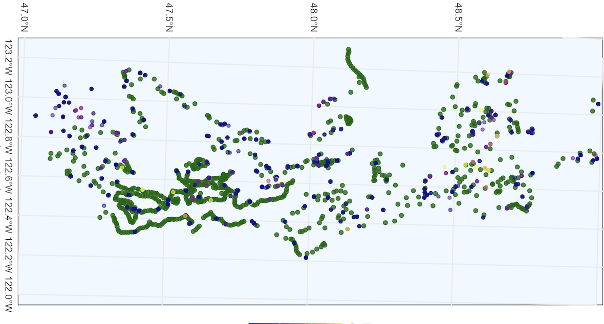
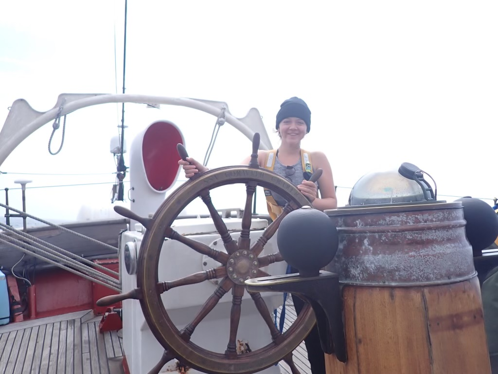

Research Experience
Current

Wood Lab (UW SAFS)
Parasite-invasive species research and teaching module development.

Olympic Natural Resources Center
HAB monitoring and marine sample processing in Forks, WA.

Rocky Mountain Biological Laboratory
Field research on salamander biofluorescence in Colorado.
Current

Eelgrass-HAB Spatial Analysis
Independent research with Dr. Padilla-Gamiño & Dr. Trainer.

SEA Education Association
Oceanographic sampling and biodiversity monitoring at sea.